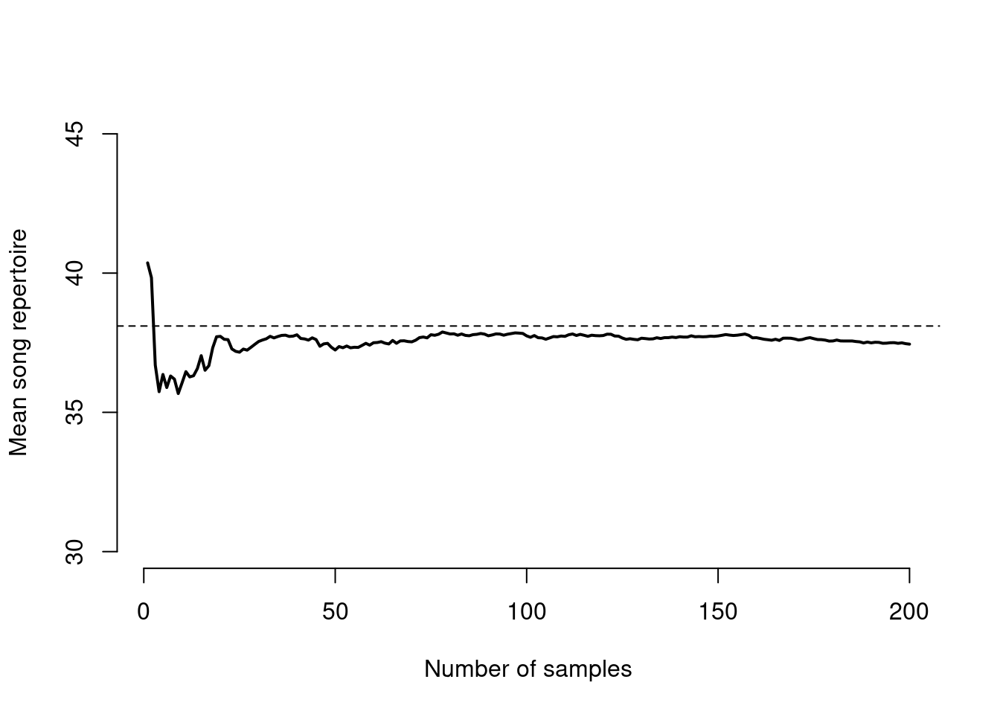
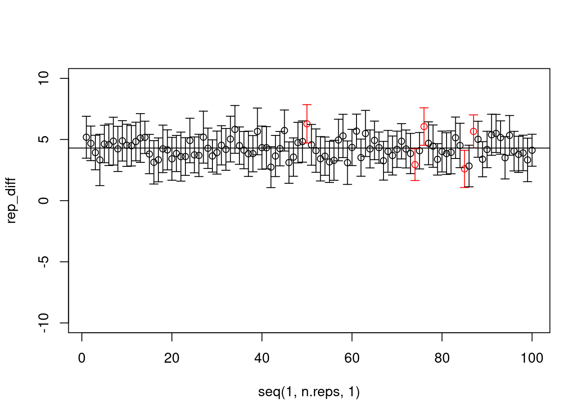
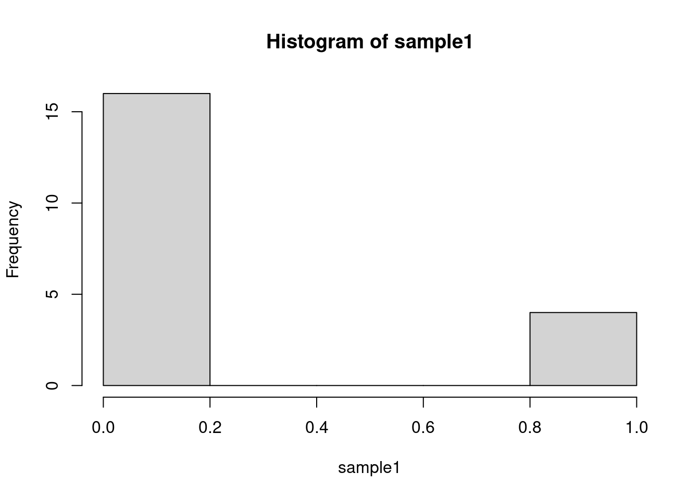
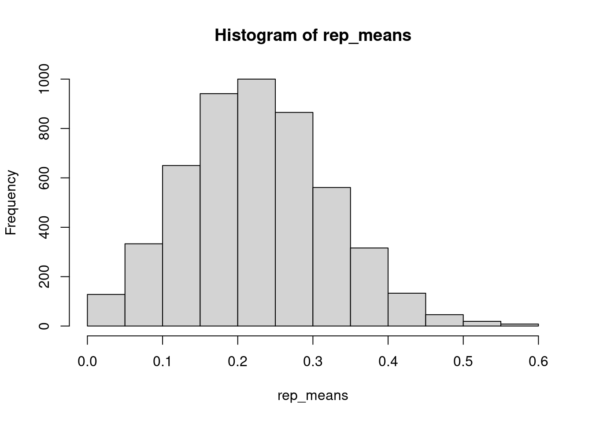

5 The law of large numbers
As our sample size increases, the sample mean \(\bar{x}\) will more closely approximate the population mean \(\mu\). To demonstrate this, we are going to use something called a for loop. A for loop allows us to iterate a process.
One way to think about a for loop is as a set of instructions for an extremely literal toddler. Pretend you have this bowl of fruit, and you need the toddler to pick up a piece of fruit, bring it to the kitchen, wash it, put it into a new bowl, and then repeat this for the next fruit. They can only carry one fruit at a time. How we would write this as a for loop is to first specify what they will be working with, i.e. “for each fruit in the fruit bowl” is written as for(fruit in fruit_bowl). Then, the next step would be “take fruit to kitchen” which might be to_kitchen(fruit), and so on. In the code below, we will use the print() function instead because there is no such thing as a to_kitchen function (unless you write it yourself).
fruit_bowl <- c("kiwi", "banana", "apple", "pomegranate", "pear")
for(fruit in fruit_bowl){
print(paste("pick up", fruit)) # paste is a function that concatenates strings
print(paste("take", fruit, "to kitchen"))
print(paste("wash", fruit))
print(paste("set", fruit, "in new bowl"))
}## [1] "pick up kiwi"
## [1] "take kiwi to kitchen"
## [1] "wash kiwi"
## [1] "set kiwi in new bowl"
## [1] "pick up banana"
## [1] "take banana to kitchen"
## [1] "wash banana"
## [1] "set banana in new bowl"
## [1] "pick up apple"
## [1] "take apple to kitchen"
## [1] "wash apple"
## [1] "set apple in new bowl"
## [1] "pick up pomegranate"
## [1] "take pomegranate to kitchen"
## [1] "wash pomegranate"
## [1] "set pomegranate in new bowl"
## [1] "pick up pear"
## [1] "take pear to kitchen"
## [1] "wash pear"
## [1] "set pear in new bowl"A more common way to use for loops is with an index. Rather than setting up our fruit bowl in advance, we instead have a list of fruits and we can subset each one based on numbers. i.e. fruit_bowl[1] is "kiwi". What is nice about this is you can combine different vectors and subset them by the same index.
fruits <- c("apples", "bananas", "grapes")
# here we use i as a placeholder to stand for index
for(i in 1:3){
print(fruits[i])
}## [1] "apples"
## [1] "bananas"
## [1] "grapes"# add in a second vector of adjectives
adjectives <- c("green", "yellow", "purple")
for(i in 1:3){
print(paste(fruits[i], "are", adjectives[i]))
}## [1] "apples are green"
## [1] "bananas are yellow"
## [1] "grapes are purple"You can also nest for loops within each other, but that is for a different day. What we want to use for loops for right now is to combine them with a probability density function (rnorm) to visualize the central limit theorem.
# Using the same population parameters as above, if we were to sample more
# individuals, would we converge towards the true mean?
n.samples <- 200
more_samples <- rnorm(n.samples, true_mean, sd = true_sd)
running_avg <- c()
for(i in 1:n.samples){
running_avg[i] <- mean(more_samples[1:i])
}
plot(running_avg,
type="l",
lwd=2,
ylim=c(30, 45),
ylab="Mean song repertoire",
xlab="Number of samples",
axes=F,
las=1)
axis(1); axis(2)
abline(h=true_mean, lty=2)
5.1 Confidence intervals

Remember that in a frequentist approach to inference, the population parameters are fixed and the data are random. This means that sometimes our sample will not contain the true population mean. Using the standard deviation of our data and our significance threshold, we can generate a confidence interval to describe this process. Often, people will use a 95% confidence interval because it matches the convention of \(\alpha = 0.05\). What a 95% confidence interval tells us is that 95% of the time, if you go out and calculate an interval in this way, it will contain the true population mean.
plot(x=xvals,
y=dnorm(xvals, mean = true_mean, sd = true_sd),
type="l",
ylab="Density", xlab="Value",
axes=F)
axis(1); axis(2)
ci <- c(true_mean-1.96*true_sd, true_mean+1.96*true_sd)
ci.vals <- seq(ci[1], ci[2], 0.1)
polygon(x = c(ci.vals, rev(ci.vals)),
y = c(dnorm(ci.vals, true_mean, true_sd),
rep(0, length(ci.vals))),
col="#bb5406bb", border=F)
text(ci[1], 0, "μ - 1.96*σ", cex=1.5)
text(ci[2], 0, "μ + 1.96*σ", cex=1.5)That means if you went out and collected observations on a sample (e.g. 10 lyrebirds) and then repeated that 100 times (i.e. 100 replicates of each sample, so 1000 total individual lyrebirds, but observed independently in 100 different replicates, each with a sample size of 10), you would expect that 95 out of those 100 confidence intervals would include the true population mean.
5.2 Lyrebird population differences
Now let’s assume we have two different lyrebird populations, and we want to know if they differ in their population-level song repertoires. We will assume one population is in a natural habitat where they are only exposed to natural sounds, such as other bird calls, water, wind, etc. The other is in a degraded woodland near human population centers and is also exposed to anthropogenic noises, which we might expect would increase the mean song repertoire for that population.
nat_pop_mean <- 38.1
nat_sd <- 2
urb_pop_mean <- 42.4
urb_sd <- 4
true_diff <- urb_pop_mean - nat_pop_mean
n.obs <- 30 # we observe 30 individuals in each population
n.reps <- 100
# For each replication, we will use a one-sided t-test to test if the urban
# population has a larger song repertoire than the natural population
# set up placeholder objects
rep_diff <- rep_low <- rep_up <- contains_true <- c()
for(i in 1:n.reps){
nat_pop <- rnorm(n.obs, nat_pop_mean, nat_sd)
urb_pop <- rnorm(n.obs, urb_pop_mean, urb_sd)
mod1 <- t.test(urb_pop, nat_pop)
rep_diff[i] <- mean(urb_pop) - mean(nat_pop)
rep_low[i] <- mod1$conf.int[1]
rep_up[i] <- mod1$conf.int[2]
contains_true[i] <- as.logical(rep_low[i]<true_diff & rep_up[i]>true_diff)
}
plot(rep_diff ~ seq(1, n.reps, 1), ylim=c(-10, 10),
col=c("red", "black")[factor(contains_true)])
arrows(x0=seq(1, n.reps, 1), y0=rep_low, y1=rep_up, code=3, angle=90, length=0.05,
col=c("red", "black")[factor(contains_true)])
abline(h=true_diff)
## contains_true
## FALSE TRUE
## 5 955.3 Lyrebird mating success and the sampling distribution
The law of large numbers does not just apply to the normal distribution, or even just to continuous distributions for that matter. The sampling distribution for any parameter will converge on the true population value with enough samples. It is important to keep the sampling distribution and sample distribution separate; the sampling distribution is the distribution of statistics calculated from a bunch of different samples, whereas the sample distribution is the distribution of observations.
Let’s assume each male lyrebird in our population has a 0.25 probability of mating success, we observe 20 males in each of our samples, and we replicate our sample 100 times.

# we do not have a sampling distribution yet; for that we need replicates
rep_means <- c()
for(i in 1:5000){
rep_means[i] <- mean(sample(rbinom(20, 1, 0.25)))
}
hist(rep_means, 10) # this is our sampling distribution
5.4 Credible intervals
We will get to Bayesian statistics later in the semester, but for now, know that the Bayesian equivalent of a confidence interval is called a credible interval. The interpretation of a 95% Bayesian credible interval is that there is a 95% probability that the true population mean lies within that interval. This is frequently mixed up in the literature and frequentists often describe confidence intervals as if they are credible intervals but this is 100% not true.